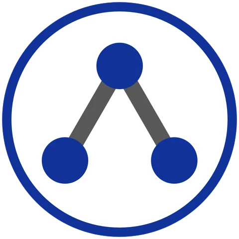
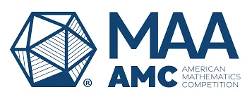
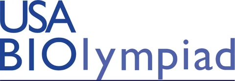

Gold
USA Computing Olympiad
Honors / Academic & team recognition
A few milestones along the way.
There’s always more to learn.

USA Computing Olympiad

American Mathematics Competitions
American Invitational Mathematics Examination

USA Biology Olympiad
British Biology Olympiad

Multiple semesters / Wego International Program
02 / Shared achievements

3-Minute Science Competition
Team recognition for our science communication.
The work behind the award ↗
VEX Robotics
Recognition earned with the team.
Inside the workshop ↗About the competitions
Competition references provide context; they do not independently verify these results.